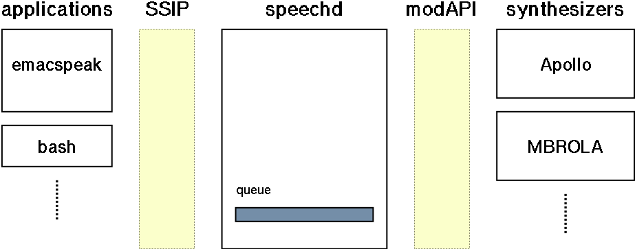

Tento manu�l se vzathuje ke Speech Dispatcher, verze 0.11.4. Jedn� se v�ak pouze o u�ivatelskou ��st dokumentace a upozor�ujeme, �e tento p�eklad ji� nen� aktu�ln�! Poskytujeme jej s t�m, �e mo�n� bude u�ite�n� a to zejm�na v sekc�ch, kter� popisuj� obecn� koncepty a my�lenky projektu, a to t�m, kte�� si nemohou p�e��st anglickou dokumentaci. Nikdo by nicm�n� nem�l spol�hat na technick� detaily zde uveden�, proto�e mnoho v�c� je ji� dnes jinak.
Copyright © 2001, 2002, 2003 Brailcom, o.p.s.
D�v�me povolen� kop�rovat, distribuovat a/nebo modifikovate tento dokument pod podm�nkami GNU Free Documentation License, Verze 1.2 nebo jak�koliv nov�j�� verze vydan� Free Software Foundation; bez jak�chkoliv Invariant Sections (nem�nn�ch sekc�), bez Front-Cover Texts (texty na p�edn� stran� ob�lky) a bez Back-Cover Texts (texty na zadn� stran� ob�lky). Kopie t�to licence je p�ilo�ena v sekci nazvan� ,,GNU Free Documentation License”.
Next: U�ivatelsk� dokumentace, Previous: Speech Dispatcher, Up: Speech Dispatcher [Contents][Index]
Next: Z�kladn� design, Previous: �vod, Up: �vod [Contents][Index]
Projekt Speech Dispatcher se sna�� poskytnout na za��zen� nez�vislou vrstvu pro �e�ovou synt�zu. M�l by poskytovat jednoduch� rozhran� pro klientsk� aplikace (aplikace, kter� cht�j� mluvit), stejn� jako pro ovlada�e konkr�tn�ch za��zen� (r�zn� �e�ov� syntetiz�ry).
Vysoce kvalitn� �e�ov� synt�za je tu ji� dlouho a nyn� je pou�iteln� i pro b�n� u�ivatele na jejich dom�c�ch po��ta��ch. Ob�as to p�ich�z� jako nutnost, ob�as je to jen dobr� vlastnost, aby n�kter� programy poskytovaly �e�ov� v�stup. Pro synt�zu hlasu je tu �irok� pole vyu�it� od v�ukov�ho software a� po specializovan� syst�my, jako jsou nap��klad nemocnice �i laborato�e. Pro zrakov� posti�en� u�ivatele je to jedna ze dvou z�kladn�ch cest, jak z�skat v�stup z po��ta�e (tou druhou je Braillsk� ��dek).
Existuj� r�zn� �e�ov� syntetiz�ry s r�zn�mi schopnostmi. N�kter� z nich jsou hardwarov�, n�kter� softwarov�. N�kter� jsou svobodn�m software a jsou voln� dostupn� na internetu. Program�to�i to maj� opravdu t�k�, kdy� cht�j� sv� programy rozmluvit, proto�e pot�ebuj� nejprve naj�t n�jak� vhodn� syntetiz�r (dlouh� hodiny experimentov�n� a tak d�le) a potom jej pot�ebuj� n�jak zprovoznit s jejich programem. �asto mus� ps�t pro tyto programy �i hardwarov� za��zen� vlastn� ovlada�e a d�laj� to znovu a znovu. Snadno si lze p�edstavit, �e se to cel� zhrout� kdy� nevinn� u�ivatel spust� dva programy najednou. Kdyby p�esto nastartovaly oba, budou k�i�et jeden p�es druh�ho.
T�m je pro program�tory velmi obt��n� implementovat do sv�ch program� podporu �e�ov� synt�zy (pro nevidom� u�ivatele, nebo prost� pro lep�� u�ivatelsk� rozhran�) a je to jeden z d�vod�, pro� po��d je�t� pln� nevyu��v�me toho, co �e�ov� synt�za nab�z�.
V ide�ln�m sv�t� by program�to�i mohli pro �e�ovou synt�zu pou��vat podobn� p��kazy, jako to d�laj� pro textov� v�stup na obrazovku (printf, puts, ...). V ide�ln�m sv�t� by existovalo n�jak� speech_printf(), kter� by se staralo o to, aby byla zpr�va p�emluvena ve spr�vn� �as bez p�eru�ov�n� ostatn�ch. Program�tor by se tak nemusel starat o to, jak je p�esn� komunikace s �e�ov�m syntetiz�rem implementov�na. V ide�ln�m sv�t� by byl v ka�d� GNU/Linuxov� distribuci n�jak� �e�ov� syntetiz�r a n�jak� rozhran� staraj�c� se o aplikace, kter� cht�j� mluvit, dovoluj�c� u�ivatel�m nastavit si parametry �e�i a poskytuj�c� n�jak� jednoduch� rozhran� (jako speech_printf()) pomoc� n�jak� sd�len� knihovny pro program�tory. Bude to j�t� dlouh� cesta ne� se n�m poda�� dos�hnout tohoto stavu v�c�, ale se Speech Dispatcherem d�l�me prvn� kr��ky...
Next: P�ehled z�kladn�ch rys�, Previous: Motivace, Up: �vod [Contents][Index]
V komunikaci mezi v�emi r�zn�mi aplikacemi a syntetiz�ry je obrovsk� nepo��dek. Proto jsme cht�li, aby byl Speech Dispatcher vrstva odd�luj�c� aplikace a syntetiz�ry tak, aby se aplikace nemusely starat o syntetiz�ry a syntetiz�ry se nemusely starat o interakci s aplikacemi.
Rozhodli jsme se implementovat Speech Dispatcher jako server, kter� p�ij�m� od
aplikac� p��kazy p�es protokol nazvan� SSIP, zpracov�v� je a, pokud je
to nutn�, zavol� p��slu�nou funkci dan�ho v�stupn�ho modulu, kter� pak
komunikuje s n�kter�m z r�zn�ch syntetiz�tor�.
Ka�d� klient (aplikace, kter� chce mluvit) otev�e socketov� spojen� na Speech Dispatcher a vol� funkce jako say(), stop(), pause() poskytovan� knihovnou implementuj�c� tento protokol. Tato sd�len� knihovna je st�le na stran� klienta a pos�l� Speech Dispatcheru SSIP p��kazy p�es otev�en� socket. Kdy� p��kazy doraz� do Dispatchera, ten je zpracuje, p�e�te text, kter� by m�l b�t p�e��k�n a vlo�� jej do fronty podle jeho priority. Potom se rozhodne kdy, s jak�mi parametry (nastavovan�mi klientsk�m programem i u�ivatelem) a na jak�m syntetiz�ru zpr�vu nech� p�emluvit. Tyto po�adavky na mluven� jsou pak zpracov�v�ny v�stupn�mi moduly (pluginy) pro r�zn� hardwarov� a softwarov� syntetiz�ry a p�e��k�ny nahlas.
Detailn� popis programov�n� klient� i serveru je k dispozici v anglick�m manu�lu.
Next: Sou�asn� stav, Previous: Z�kladn� design, Up: �vod [Contents][Index]
Speech Dispatcher z pohledu u�ivatele:
Speech Dispatcher z pohledu program�tora aplikace:
Next: GNU General Public License, Previous: �vod, Up: Speech Dispatcher [Contents][Index]
Next: Invoking, Previous: U�ivatelsk� dokumentace, Up: U�ivatelsk� dokumentace [Contents][Index]
V t�to sekci je detailn�j�� popis z�kladn�ch funkc� Speech Dispatcheru.
Next: Historie zpr�v, Previous: Z�kladn� funkce, Up: Z�kladn� funkce [Contents][Index]
Speech Dispatcher nem��e syntetizovat v�echny zpr�vy, kter� do n�j p�ich�z� z prost�ho d�vodu, �e zpr�vy p�ich�zej� oby�ejn� rychleji, ne� je syntetick� hlas dok�e ��st. Na obrazovce monitoru je v porovn�n� s jednokan�lov�m �e�ov�m v�stupem relativn� hodn� m�sta. Z toho d�vodu pou��v�me syst�m n�kolika priorit zam��en�ch na r�zn� typy zpr�v.
My�lenka je takov�, �e �lohou program�tora klientsk� aplikace bude pouze ur�it pro ka�dou zpr�vu ur�itou prioritu odpov�daj�c� typu dan� zpr�vy. Ve�ker� synchronizace a p�ep�n�n� mezi t�mito zpr�vami (kter� mohou poch�zet od r�zn�ch klient�) potom bude zaji�t�no aplikov�n�m ur�it�ch pravidel ve Speech Dispatcheru.
Next: Diagram priorit, Previous: Model priorit zpr�v, Up: Model priorit zpr�v [Contents][Index]
Speech Dispatcher poskytuje syst�m p�ti priorit. Ka�d� zpr�va obsahuje bu� explicitn� informaci o priorit�, nebo j� je p�i�azena v�choz� priorita.
Pros�m pod�vejte se tak� na p�ilo�en� diagram (dole).
importantTato zpr�va bude p�e��k�na okam�it�, jak doraz� do serveru. Nen� nikdy p�eru�ena. Kdy� server obdr�� sou�asn� n�kolik r�zn�ch zpr�v t�to priority, ty jsou ulo�eny a p�e��k�ny v po�ad�, ve kter�m p�i�ly.
Kdy� p�ijde nov� zpr�va priority important a zrovna se ��k� n�jak� jin�
zpr�va, tato jin� zpr�va je zahozena. Dal�� zpr�vy ni���ch priorit jsou bu�
pozdr�eny (priorita message a text) ne� ji� ne�ekaj� na p�e��k�n�
��dn� zpr�vy priority important, nebo jsou zahozeny (priority
notification a progress).
Tyto zpr�vy by m�ly b�t tak kr�tk�, jak je to jen mo�n�, a m�ly by b�t pou��v�ny pouze z��dka, proto�e blokuj� v�stup v�ech ostatn�ch zpr�v.
messageTato zpr�va bude p�e��k�na, pokud ji� ve front� ne�ek� ��dn� jin� zpr�va
priority important nebo message. V opa�n�m p��pad� je tato
zpr�va pozdr�ena dokud nebudou v�echny p�e��k�ny. To znamen�, �e priorita
message nezastavuje sama sebe. Kdy� ve front� �ekaj� zpr�vy priorit
notification nebo progress nebo text kdy� p�ijde zpr�va
priority message, jsou zahozeny.
textTato zpr�va bude p�e��k�na, kdy� ve front� ne�ek� ��dn� zpr�va priority
important nebo message. Pokud �ek�, tato nov� zpr�va je
pozdr�ena dokud nebudou p�edchoz� zpr�vy p�e��k�ny.
Priorita text p�erqu�uje sama sebe. To znamen�, �e kdy� p�ijde n�kolik zpr�v priority text, ty nejsou p�e��k�ny v po�ad�, ve kter�m p�i�ly, ale bude vy��ena pouze posledn� z nich a ostatn� jsou p�eru�eny a zahozeny.
Pokud jsou ve front� zpr�vy priorit notification nebo progress
nebo se pr�v� p�e��k�vaj�, jsou zahozeny.
notificationToto je zpr�va n�zk� priority. Pokud ve front� �ekaj� zpr�vy priorit
important, messages, text nebo progress nebo jsou
pr�v� p�e��k�v�ny, tato nov� zpr�va priority notification je zru�ena.
Tato priorita p�eru�uje sama sebe, tak�e kdy� p�ijde najednou v�ce zpr�v s
prioritou notification, p�e��k� se pouze posledn� z nich.
progressToto je speci�ln� priorita pro zpr�vy, kter� p�ich�zej� kr�tce po sob� a nesou
informaci o n�jak� prob�haj�c� �innosti (nap�. Dokon�eno 45%).
Kdyby nov� zpr�vy p�eru�ovaly ostatn� (viz. priorita Notification), u�ivatel by nemusel sly�et ani jednu zpr�vu do konce.
Tato priorita se chov� stejn� jako notification s v�jimkou dvou v�c�.
Completed
100%, aby v�d�l, �e proces ji� skon�il). V�dy, kdy� ve front� ji� ne�ek�
��dn� nov� zpr�va t�to priority a posledn� p��choz� zpr�va je�t� nebyla
p�e��k�na, je jej� p�e��k�n� vynuceno s prioritou message.
Next: P��klady vyu�it� priorit, Previous: Priority Categories, Up: Model priorit zpr�v [Contents][Index]
Previous: Diagram priorit, Up: Model priorit zpr�v [Contents][Index]
P��klady pou�it� priority important jsou:
P��klady pou�it� priority message jsou:
P��klady pou�it� priority text jsou:
P��klady pou�it� priority notification jsou:
P��klady pou�it� priority progress jsou:
Next: V�ce v�stupn�ch modul�, Previous: Model priorit zpr�v, Up: Z�kladn� funkce [Contents][Index]
Pro nevidom� a zrakov� posti�en� je dobrou vlastnost�, pokud maj� mo�nost n�jak�m jednoduch�m klientem proch�zet historii vysloven�ch zpr�v.
N�kter� m�n� d�le�it� zpr�vy jsou p�ijmuty Speech Dispatcherem bez toho, aby byly p�e��k�ny, proto�e jsou potla�eny d�le�it�j��mi informacemi. To je ned�liteln� vlastnost ka�d�ho �e�ov�ho rozhran�, proto�e nen� mo�n� podat v �e�ov�m v�stupu tolik informac�, kolik se jich vejde na obrazovku. To je jeden z hlavn�ch d�vod�, pro� je v�hodn� udr�ovat historii p�ijat�ch zpr�v, aby se mohl u�ivatel pod�vat, zda mu neu�lo n�co d�le�it�ho.
Previous: Historie zpr�v, Up: Historie zpr�v [Contents][Index]
Aby bylo ochr�n�no soukrom� u�ivatel�, Speech Dispatcher omezuje p��stup k historii na ur�itou podmno�inu p�ijat�ch zpr�v. Plat� n�sleduj�c� pravidla:
speechd jsou p��stupny v�em u�ivatel�m
na dan�m syst�mu, pod kter�m b�� Speech Dispatcher ve skupin� speechd.
Dv� zpr�vy jsou pova�ov�ny za identick� jestli�e jejich spojen� poch�zej� z toho sam�ho po��ta�e, u�ivatelsk� jm�na jsou stejn� a jejich identita m��e b�t ov��ena, jak je pops�no v Autentifikace u�ivatel�. Pokud nem��e b�t u�ivatelova identita ov��ena, tento u�ivatel je pova�ov�n za jin�ho ne� v�ichni p�ipojen� nebo d��ve p�ipojen� u�ivatel�.
Next: Autentifikace u�ivatel�, Previous: Historie zpr�v, Up: Z�kladn� funkce [Contents][Index]
Speech Dispatcher podporuje soub�n� pou��v�n� v�ce v�stupn�ch modul�. Pokud tyto moduly poskytuj� dobrou synchronizaci, lze je p�i �ten� zpr�v kombinovat. Pokud nap�. modul1 mluv� anglicky a �esky, zat�mco modul2 mluv� pouze n�mecky, tak pokud p�ijde n�jak� zpr�va v n�m�in�, pou�ije se modul2, zat�mco pro ostatn� jazyky se pou�ije modul1. Na druh� stran� jazyk nen� jedin�m krit�riem pro takov� rozhodnut�. P�esn� pravidla pro v�b�r v�stup�ho modulu mohou b�t ovlivn�na v konfigura�n�m souboru speechd.conf.
Previous: V�ce v�stupn�ch modul�, Up: Z�kladn� funkce [Contents][Index]
NOTE: Na implementaci t�to vlastnosti se pracuje, ale sou�asn� verze ji nepodporuje.
Speech Dispatcher neposkytuje ��dn� explicitn� autentifika�n� mechanismus. K ov��en� identity u�ivatl� pou��v�me Identification Protocol definovan� v RFC 1413.
V konfiguraci je mo�n� specifikovat mapov�n� u�ivatel�. To umo��uje jednat s ur�it�mi u�ivateli jako s jedn�m a p�id�lit jim stejn� pr�va (nap�. proch�zet jejich Historie zpr�v).
Next: konfigurace, Previous: Z�kladn� funkce, Up: U�ivatelsk� dokumentace [Contents][Index]
Speech Dispatcher m��e b�t obecn� spou�t�n pod oby�ejn�m u�ivatelem. Sna�ili jsme se jej zabezpe�it, jak jen to bylo mo�n�, ale nejsme odborn�ky na po��ta�ovou bezpe�nost a k�d m��e obsahovat nebezpe�n� chyby. Nedoporu�ujeme jej spou�t�t jako root nebo pod jin�m vysoce privilegovan�m u�ivatelem.
Jedin� omezen� jsou tyto:
pidpath p�i vol�n� skriptu ./configure p�i kompilaci.
Speech Dispatcher m��e b�t spu�t�n s t�mito volbami:
speech-dispatcher [-{d|s}] [-l {1|2|3|4|5}] [-p=port] | [-v] | [-h]
-d or --run-daemonSpust� program jako d�mona (b�� v pozad�, odpoj� se od termin�lu, atd.) Toto je v�choz� chov�n�.
-s or --run-singleSpust� program jako b�nou aplikaci b��c� na pop�ed�.
-l level or --log-level=levelVybere po�adovan� logovac� �rove�. Logovac� �rove� je ��slo mezi 0 a 5 (0 znamen� neloguj nic, 5 znamen� zapisuj t�m�� v�e v�etn� zpracov�van�ho textu.) Standardn� je 3. See �rovn� logov�n�.
Logovac� �rove� 5 by nem�la b�t pou��v�na k jin�m ��el�m, ne� pro hled�n� chyb a to pouze kr�tkodob�. Logy, kter� produkuje mohou nar�st do obrovsk� velikosti a obsahuj� text �ten� u�ivateli nez�visle na r�zn�ch p��stupov�ch pr�vech, jak plat� pro historii. Spou�t�t server s touto �rovn� logov�n� tedy m��e snadno v�st k naru�en� soukrom�.
-p or --portZad� port, na kter�m by m�l server �ekat na klienty. V�choz� je 6560.
-v or --versionVyp��e informace o verzi Speech Dispatchera. Tak� ozn�m� z�kladn� informace o copyrightu.
-h or --helpVyp��e n�pov�du o volb�ch p��kazov� ��dky, upozorn�n� o copyrightu a emailovou adresu pro zas�l�n� ozn�men� o chyb�ch.
Previous: Invoking, Up: U�ivatelsk� dokumentace [Contents][Index]
Speech Dispatcher m��e b�t konfigurov�n na n�kolika r�zn�ch �rovn�ch. Jedna z nich je nastavov�n� glob�ln�ch parametr� p�es serverov� konfigura�n� soubor. Je zde i podpora pro konfiguraci specifickou pro ur�it� klienty.
N�kter� aplikace maj� vlastn� mechanismus nastavov�n� voleb souvisej�c�ch s �e�ovou synt�zou. Pro detaily o t�chto nastaven�ch se pros�m pod�vejte do dokumentace dan�ho programu.
N�sleduj�c� kapitoly se zab�vaj� pouze konfigurac� na stran� serveru p�es konfigura�n� soubor.
Next: Configuration options, Previous: konfigurace, Up: konfigurace [Contents][Index]
Pro na��t�n� configurace zalo�en� na textov�ch souborech pou��v�me knihovnu DotConf, tak�e bude syntaxe nejsp�� mnoha u�ivatel�m pov�dom�.
Ka�d� z �et�zcov�ch konstant, pokud nen� uvedeno jinak, by m�la b�t zak�dov�na
v UTF-8. Jm�na voleb nepou��vaj� jin� znaky ne� standardn� ASCII sadu omezenou
na znaky (a, b, ...), poml�ky (-) a podtr��tka _.
Koment��e a do�asn� neaktivn� volby za��naj� znakem #. Pokud chcete
takovu volbu zapnout, sta�� smazat znak koment��e a nastavit volbu na
po�adovanou hodnotu.
# toto je komentar # InactiveOption "tato volba je zatim vypla komentarem"
�et�zce jsou uzav�eny v uvozovk�ch.
LogFile "/var/log/speech-dispatcher.log"
��sla jsou zaps�na bez uvozovek.
Port 6560
P�ep�na�e pou��vaj� On (zapnuto) a Off (vypnuto).
Debug Off
Next: Output Modules Configuration, Previous: Syntaxe konfigura�n�ho souboru, Up: konfigurace [Contents][Index]
V�echny dostupn� volby jsou zdokumentov�ny p��mo v konfigura�n�m souboru a jsou
k nim uvedeny i p��klady. V�t�ina voleb je nastavena na v�choz� hodnotu a
zakomentov�na. Pokud je chcete zm�nit, posta�� modifikovat jejich hodnotu a
smazat symbol koment��e #.
Next: �rovn� logov�n�, Previous: Configuration options, Up: konfigurace [Contents][Index]
Ka�d� u�ivatel by si m�l zapnout ve sv� konfiguraci alespo� jeden v�stupn� modul, pokud chce, aby Speech Dispatcher produkoval n�jak� zvukov� v�stup. Kdy� nen� na�ten ��dn� v�stupn� modul, Speech Dispatcher sice nastartuje, bude komunikovat s klienty a logovat zpr�vy do historie, ale nebude produkovat ��dn� zvuk.
Ka�d� v�stupn� modul je t�eba do Speech Dispatchera nat�hnout jednou ��dkou “AddModule” v etc/speechd.conf. Nav�c, ka�d� v�stupn� modul m� p�i�azen vlastn� konfigura�n� soubor.
Next: Konfigura�n� soubory v�stupn�ch modul�, Previous: Output Modules Configuration, Up: Output Modules Configuration [Contents][Index]
Ka�d� modul, kter� by se m�l spustit p�i startu Speech
Dispatchera, mus� b�t nata�en p��kazem AddModule v konfiguraci.
V�imn�te si, �e lze nat�hnout jeden bin�rn� modul v�cekr�t s r�zn�mi
konfigura�n�mi soubory a pod jin�mi jm�ny. To je u�ite�n� hlavn� pro
natahov�n� generick�ch v�stupn�ch modul�. See Konfigurace generick�ho v�stupn�ho modulu.
AddModule "module_name" "module_binary" "module_config"
module_name je jm�no dan�ho v�stupn�ho modulu.
module_binary je jm�no bin�rn�ho spustiteln�ho souboru tohoto v�stupn�ho modulu. To m��e b�t bu� cesta absolutn� nebo relativn� k bin/speechd-modules/.
module_config je soubor s konfigurac� pro tento konkr�tn� v�stupn� modul. Cesta m��e b�t absolutn� i relativn� k etc/speech-dispatcher/modules/. Tento parametr je voliteln� (nen� t�eba jej uv�d�t).
Next: Konfigurace generick�ho v�stupn�ho modulu, Previous: Natahov�n� modul� ve speechd.conf, Up: Output Modules Configuration [Contents][Index]
Ka�d� v�stupn� modul je odli�n� a proto m� odli�n� volby v konfiguraci. Pros�m prostudujte si koment��e v dan�m konfigura�n�m souboru. Zde je pops�no pouze n�kolik voleb, kter� jsou pro n�kter� v�stupn� moduly spole�n�.
AddVoice "language" "symbolicname" "name"Ka�d� v�stupn� modul poskytuje n�jak� hlasy a n�kdy dokonce podporuje r�zn� jazyky. Z toho d�vodu byl zaveden spole�n� mechanismus, kter�m m��ou b�t tyto hlasy definov�ny v konfiguraci. ��dn� modul ov�em nen� povinen tuto volbu pou��vat. N�kter� syntetiz�tory, nap�. Festival, podporuj� symbolick� jm�na SSIP p��mo, tak�e konfigurace konkr�tn�ch hlas� se prov�d� v syntetiz�toru samotn�m.
Ka�d�mu definovan�mu hlasu odpov�d� p�esn� jedna ��dka AddVoice.
language je ISO k�d jazyka tohoto hlasu (en, cs, de, en-US, ...)
symbolicname je symbolick� jm�no, pod kter�m chcete, aby byl tento hlas dostupn�. See Standardn� hlasy, pro seznam symbolick�ch jmen, kter� m��ete pou��t.
name je jm�no specifick� pro dan� v�stupn� modul. Pros�m pod�vejte se na koment��e v p��slu�n�m konfigura�n�m souboru v sekci AddModule pro detailn�j�� informace.
Nap�. definice, kterou v sou�astnosti pou��v�me pro Epos (generic) vypad� takto:
AddVoice "cs" "male1" "kadlec"
AddVoice "sk" "male1" "bob"
ModuleDelimiters "delimiters", ModuleMaxChunkLength length�asto se v�stupn� modul nesna�� vysyntetizovat cel� p��choz� text najednou, ale m�sto toho jej nejprve roz�e�e na men�� kousky (v�ty, ��sti v�t) a ty potom postupn� odes�l� na synt�zu. Tento p��stup, vyu��van� n�kter�mi v�stupn�mi moduly, je mnohem rychlej��, ale na druh� stran� zase limituje schopnost syntetiz�ru poskytnout dobrou intonaci.
Z toho d�vodu m�te oby�ejn� mo�nost zkonfigurovat si na jak�ch znac�ch (delimiters) by se m�l text rozd�lit na men�� ��sti (pokud jsou n�sledov�ny n�jak�m whitespace znakem). Druh� volba (length) ud�v�, po kolika znac�ch by se m�l text n�siln� rozd�lit, pokud nebyl nalezen ��dn� delimiter.
Pokud tato dv� pravidla zp��sn�te, dostanete lep�� rychlost, ale vzd�te se ur�it� ��sti kvality intonace. Tak�e nap��klad pro pomalej�� po��ta�e doporu�ujeme do delimiters vlo�it i ��rku (,), aby byl text rozd�len i na ��stech v�ty, zat�mco na rychlej��ch po��ta��ch je lep�� tam ��rku ned�vat, tak�e do syntetiz�ru v�dy doraz� cel� souv�t�.
To sam� plat� o MaxChunkLength. Pro rychlej�� po��ta�e
je lep�� nastavit v�t�� hodnotu.
Nap��klad v�choz� hodnoty ve v�stupn�m modulu pro Festival jsou:
FestivalMaxChunkLength 300
FestivalDelimiters ".?!;,:"
V�stupn� modul se m��e tak� rozhodnout d�lit v�ty na delimiters pouze pokud ty jsou n�sledov�ny mezerou. Tak�e nap��klad “file123.tmp” by rozd�leno nebylo, ale v�ta “The horse raced around the fence, that was lately painted green, fell.” by rozd�lena byla (to je mimochodem velmi zaj�mav� v�ta).
Previous: Konfigura�n� soubory v�stupn�ch modul�, Up: Output Modules Configuration [Contents][Index]
Generick� v�stupn� modul u�ivatel�m dovoluje jednodu�e si napsat vlastn� jednoduch� v�stupn� modul pro syntetiz�ry, kter� maj� rozhran� ve form� jednoduch�ho ��dkov�ho klienta, pouze modifikac� konfigura�n�ho souboru. T�mto zp�sobem nemus� ps�t ��dn� specifick� k�d v C a u�ivatel� si mohou p�id�vat podporu pro v�stupn� za��zen� i kdy� neum� programovat. See AddModule.
Kl��ov� ��st ka�d�ho generick�ho v�stupn�ho modulu je definice �et�zce, kter� se m� spou�t�t.
execution_string je p��kaz, kter� by m�l b�t zavol�n v shellu, kdy� je
pot�eba n�co ��ct. Ve skute�nosti to m��e b�t v�ce jak jeden p��kaz, dohromady
z�et�zen� oper�torem &&. Kdy� bude v�stupn� modul cht�t p�e��k�v�n�
zpr�vy zastavit, za�le t�mto proces�m sign�l KILL, tak�e je d�le�it�, aby
pou�it� p��kazy po obdr�en� KILL okam�it� p�estaly mluvit. (Na v�t�in�
GNU/Linuxov�ch syst�m� m� tuto vlastnost utilita play)
V execution_string m��ete vyu��t t�chto prom�nn�ch, kter� budou
nahrazeny po�adovan�mi hodnotami, ne� bude p��kaz vykon�n.
$DATA
Text, kter� by m�l b�t p�e��k�n. Znaky �et�zce, kter� by n�jak interferovali
se zpracov�n�m v bashi budou automaticky nahrazeny odpov�daj�c�mi escape
sekvencemi. Asi bude ale nutn� uv�st kolem t�to prom�nn� uvozovky
(nap�. takto: \"$DATA\").
$LANG
Identifika�n� �et�zec jazyka (ten je definov�n pomoc� GenericLanguage).
$VOICE
Identifika�n� �et�zec hlasu (ten je definov�n pomoc� AddVoice).
$PITCH
Po�adovan� v��ka hlasu (desetinn� ��slo definovan� v GenericPitchAdd a v
GenericPitchMultiply)
$RATE
Po�adovan� rychlost hlasu (desetinn� ��slo definovan� v GenericRateAdd a v
GenericRateMultiply)
Tady je p��klad z etc/speech-dispatcher/modules/epos-generic.conf
GenericExecuteSynth \ "epos-say -o --language $LANG --voice $VOICE --init_f $PITCH --init_t $RATE \ \"$DATA\" | sed -e s+unknown.*$++ >/tmp/epos-said.wav && play /tmp/epos-said.wav >/dev/null"
Definuje, jak� �et�zec string-subst by m�l b�t nahrazen za $LANG
pro dan� iso-code ISO k�d jazyka.
Op�t p��klad z Epos generic:
GenericLanguage "en-US" "english-US" GenericLanguage "cs" "czech" GenericLanguage "sk" "slovak"
Tyto parametry nastavuj� konverzi pro v�po�et rychlosti a v��ky.
($RATE a $PITCH).
V�sledn� rychlost (nebo v��ka) je d�na n�sleduj�c�m vzorcem:
(speechd_rate * GenericRateMultiply) + GenericRateAdd
kde speechd_rate je hodnota mezi -100 (nejni���) a +100 (nejvy���). Je t�eba definovat n�jakou rozumnou konverzi pro dan� syntetiz�r.
(Hodnoty v GenericN�coMultiply jsou vyn�sobeny stem, proto�e st�vaj�c� verze DotConfu nepodporuje desetinn� ��sla. M��ete tedy ps�t 0.85 jako 85 atd.)
Previous: Output Modules Configuration, Up: konfigurace [Contents][Index]
Ve Speech Dispatcheru je 6 r�zn�ch �rovn� logov�n�. 0 znamen� ��dn� logov�n�, zat�mco 5 znamen� vypisovat t�m�� v�echny dostupn� informace.
MALE1MALE2MALE3FEMALE1FEMALE2FEMALE3CHILD_MALECHILD_FEMALESkute�n� dostupnost t�chto hlas� nen� zaru�ena, ale p��kaz SET SELF
VOICE mus� akceptovat jak�koliv z nich. Pokud nen� dan� hlas dostupn�, je
mapov�n na jin� hlas v�stupn�m modulem.
Next: GNU Free Documentation License, Previous: U�ivatelsk� dokumentace, Up: Speech Dispatcher [Contents][Index]
Copyright © 1989, 1991 Free Software Foundation, Inc. 51 Franklin Street, Fifth Floor, Boston, MA 02110-1301, USA Everyone is permitted to copy and distribute verbatim copies of this license document, but changing it is not allowed.
The licenses for most software are designed to take away your freedom to share and change it. By contrast, the GNU General Public License is intended to guarantee your freedom to share and change free software—to make sure the software is free for all its users. This General Public License applies to most of the Free Software Foundation’s software and to any other program whose authors commit to using it. (Some other Free Software Foundation software is covered by the GNU Lesser General Public License instead.) You can apply it to your programs, too.
When we speak of free software, we are referring to freedom, not price. Our General Public Licenses are designed to make sure that you have the freedom to distribute copies of free software (and charge for this service if you wish), that you receive source code or can get it if you want it, that you can change the software or use pieces of it in new free programs; and that you know you can do these things.
To protect your rights, we need to make restrictions that forbid anyone to deny you these rights or to ask you to surrender the rights. These restrictions translate to certain responsibilities for you if you distribute copies of the software, or if you modify it.
For example, if you distribute copies of such a program, whether gratis or for a fee, you must give the recipients all the rights that you have. You must make sure that they, too, receive or can get the source code. And you must show them these terms so they know their rights.
We protect your rights with two steps: (1) copyright the software, and (2) offer you this license which gives you legal permission to copy, distribute and/or modify the software.
Also, for each author’s protection and ours, we want to make certain that everyone understands that there is no warranty for this free software. If the software is modified by someone else and passed on, we want its recipients to know that what they have is not the original, so that any problems introduced by others will not reflect on the original authors’ reputations.
Finally, any free program is threatened constantly by software patents. We wish to avoid the danger that redistributors of a free program will individually obtain patent licenses, in effect making the program proprietary. To prevent this, we have made it clear that any patent must be licensed for everyone’s free use or not licensed at all.
The precise terms and conditions for copying, distribution and modification follow.
Activities other than copying, distribution and modification are not covered by this License; they are outside its scope. The act of running the Program is not restricted, and the output from the Program is covered only if its contents constitute a work based on the Program (independent of having been made by running the Program). Whether that is true depends on what the Program does.
You may charge a fee for the physical act of transferring a copy, and you may at your option offer warranty protection in exchange for a fee.
These requirements apply to the modified work as a whole. If identifiable sections of that work are not derived from the Program, and can be reasonably considered independent and separate works in themselves, then this License, and its terms, do not apply to those sections when you distribute them as separate works. But when you distribute the same sections as part of a whole which is a work based on the Program, the distribution of the whole must be on the terms of this License, whose permissions for other licensees extend to the entire whole, and thus to each and every part regardless of who wrote it.
Thus, it is not the intent of this section to claim rights or contest your rights to work written entirely by you; rather, the intent is to exercise the right to control the distribution of derivative or collective works based on the Program.
In addition, mere aggregation of another work not based on the Program with the Program (or with a work based on the Program) on a volume of a storage or distribution medium does not bring the other work under the scope of this License.
The source code for a work means the preferred form of the work for making modifications to it. For an executable work, complete source code means all the source code for all modules it contains, plus any associated interface definition files, plus the scripts used to control compilation and installation of the executable. However, as a special exception, the source code distributed need not include anything that is normally distributed (in either source or binary form) with the major components (compiler, kernel, and so on) of the operating system on which the executable runs, unless that component itself accompanies the executable.
If distribution of executable or object code is made by offering access to copy from a designated place, then offering equivalent access to copy the source code from the same place counts as distribution of the source code, even though third parties are not compelled to copy the source along with the object code.
If any portion of this section is held invalid or unenforceable under any particular circumstance, the balance of the section is intended to apply and the section as a whole is intended to apply in other circumstances.
It is not the purpose of this section to induce you to infringe any patents or other property right claims or to contest validity of any such claims; this section has the sole purpose of protecting the integrity of the free software distribution system, which is implemented by public license practices. Many people have made generous contributions to the wide range of software distributed through that system in reliance on consistent application of that system; it is up to the author/donor to decide if he or she is willing to distribute software through any other system and a licensee cannot impose that choice.
This section is intended to make thoroughly clear what is believed to be a consequence of the rest of this License.
Each version is given a distinguishing version number. If the Program specifies a version number of this License which applies to it and “any later version”, you have the option of following the terms and conditions either of that version or of any later version published by the Free Software Foundation. If the Program does not specify a version number of this License, you may choose any version ever published by the Free Software Foundation.
If you develop a new program, and you want it to be of the greatest possible use to the public, the best way to achieve this is to make it free software which everyone can redistribute and change under these terms.
To do so, attach the following notices to the program. It is safest to attach them to the start of each source file to most effectively convey the exclusion of warranty; and each file should have at least the “copyright” line and a pointer to where the full notice is found.
one line to give the program's name and a brief idea of what it does. Copyright (C) yyyy name of author This program is free software; you can redistribute it and/or modify it under the terms of the GNU General Public License as published by the Free Software Foundation; either version 2 of the License, or (at your option) any later version. This program is distributed in the hope that it will be useful, but WITHOUT ANY WARRANTY; without even the implied warranty of MERCHANTABILITY or FITNESS FOR A PARTICULAR PURPOSE. See the GNU General Public License for more details. You should have received a copy of the GNU General Public License along with this program. If not, see <https://www.gnu.org/licenses/>.
Also add information on how to contact you by electronic and paper mail.
If the program is interactive, make it output a short notice like this when it starts in an interactive mode:
Gnomovision version 69, Copyright (C) year name of author Gnomovision comes with ABSOLUTELY NO WARRANTY; for details type `show w'. This is free software, and you are welcome to redistribute it under certain conditions; type `show c' for details.
The hypothetical commands ‘show w’ and ‘show c’ should show the appropriate parts of the General Public License. Of course, the commands you use may be called something other than ‘show w’ and ‘show c’; they could even be mouse-clicks or menu items—whatever suits your program.
You should also get your employer (if you work as a programmer) or your school, if any, to sign a “copyright disclaimer” for the program, if necessary. Here is a sample; alter the names:
Yoyodyne, Inc., hereby disclaims all copyright interest in the program `Gnomovision' (which makes passes at compilers) written by James Hacker. signature of Ty Coon, 1 April 1989 Ty Coon, President of Vice
This General Public License does not permit incorporating your program into proprietary programs. If your program is a subroutine library, you may consider it more useful to permit linking proprietary applications with the library. If this is what you want to do, use the GNU Lesser General Public License instead of this License.
Next: Index of Concepts, Previous: GNU General Public License, Up: Speech Dispatcher [Contents][Index]
Copyright © 2000,2001,2002 Free Software Foundation, Inc. 51 Franklin Street, Fifth Floor, Boston, MA 02110-1301, USA Everyone is permitted to copy and distribute verbatim copies of this license document, but changing it is not allowed.
The purpose of this License is to make a manual, textbook, or other functional and useful document free in the sense of freedom: to assure everyone the effective freedom to copy and redistribute it, with or without modifying it, either commercially or noncommercially. Secondarily, this License preserves for the author and publisher a way to get credit for their work, while not being considered responsible for modifications made by others.
This License is a kind of “copyleft”, which means that derivative works of the document must themselves be free in the same sense. It complements the GNU General Public License, which is a copyleft license designed for free software.
We have designed this License in order to use it for manuals for free software, because free software needs free documentation: a free program should come with manuals providing the same freedoms that the software does. But this License is not limited to software manuals; it can be used for any textual work, regardless of subject matter or whether it is published as a printed book. We recommend this License principally for works whose purpose is instruction or reference.
This License applies to any manual or other work, in any medium, that contains a notice placed by the copyright holder saying it can be distributed under the terms of this License. Such a notice grants a world-wide, royalty-free license, unlimited in duration, to use that work under the conditions stated herein. The “Document”, below, refers to any such manual or work. Any member of the public is a licensee, and is addressed as “you”. You accept the license if you copy, modify or distribute the work in a way requiring permission under copyright law.
A “Modified Version” of the Document means any work containing the Document or a portion of it, either copied verbatim, or with modifications and/or translated into another language.
A “Secondary Section” is a named appendix or a front-matter section of the Document that deals exclusively with the relationship of the publishers or authors of the Document to the Document’s overall subject (or to related matters) and contains nothing that could fall directly within that overall subject. (Thus, if the Document is in part a textbook of mathematics, a Secondary Section may not explain any mathematics.) The relationship could be a matter of historical connection with the subject or with related matters, or of legal, commercial, philosophical, ethical or political position regarding them.
The “Invariant Sections” are certain Secondary Sections whose titles are designated, as being those of Invariant Sections, in the notice that says that the Document is released under this License. If a section does not fit the above definition of Secondary then it is not allowed to be designated as Invariant. The Document may contain zero Invariant Sections. If the Document does not identify any Invariant Sections then there are none.
The “Cover Texts” are certain short passages of text that are listed, as Front-Cover Texts or Back-Cover Texts, in the notice that says that the Document is released under this License. A Front-Cover Text may be at most 5 words, and a Back-Cover Text may be at most 25 words.
A “Transparent” copy of the Document means a machine-readable copy, represented in a format whose specification is available to the general public, that is suitable for revising the document straightforwardly with generic text editors or (for images composed of pixels) generic paint programs or (for drawings) some widely available drawing editor, and that is suitable for input to text formatters or for automatic translation to a variety of formats suitable for input to text formatters. A copy made in an otherwise Transparent file format whose markup, or absence of markup, has been arranged to thwart or discourage subsequent modification by readers is not Transparent. An image format is not Transparent if used for any substantial amount of text. A copy that is not “Transparent” is called “Opaque”.
Examples of suitable formats for Transparent copies include plain ASCII without markup, Texinfo input format, LaTeX input format, SGML or XML using a publicly available DTD, and standard-conforming simple HTML, PostScript or PDF designed for human modification. Examples of transparent image formats include PNG, XCF and JPG. Opaque formats include proprietary formats that can be read and edited only by proprietary word processors, SGML or XML for which the DTD and/or processing tools are not generally available, and the machine-generated HTML, PostScript or PDF produced by some word processors for output purposes only.
The “Title Page” means, for a printed book, the title page itself, plus such following pages as are needed to hold, legibly, the material this License requires to appear in the title page. For works in formats which do not have any title page as such, “Title Page” means the text near the most prominent appearance of the work’s title, preceding the beginning of the body of the text.
A section “Entitled XYZ” means a named subunit of the Document whose title either is precisely XYZ or contains XYZ in parentheses following text that translates XYZ in another language. (Here XYZ stands for a specific section name mentioned below, such as “Acknowledgements”, “Dedications”, “Endorsements”, or “History”.) To “Preserve the Title” of such a section when you modify the Document means that it remains a section “Entitled XYZ” according to this definition.
The Document may include Warranty Disclaimers next to the notice which states that this License applies to the Document. These Warranty Disclaimers are considered to be included by reference in this License, but only as regards disclaiming warranties: any other implication that these Warranty Disclaimers may have is void and has no effect on the meaning of this License.
You may copy and distribute the Document in any medium, either commercially or noncommercially, provided that this License, the copyright notices, and the license notice saying this License applies to the Document are reproduced in all copies, and that you add no other conditions whatsoever to those of this License. You may not use technical measures to obstruct or control the reading or further copying of the copies you make or distribute. However, you may accept compensation in exchange for copies. If you distribute a large enough number of copies you must also follow the conditions in section 3.
You may also lend copies, under the same conditions stated above, and you may publicly display copies.
If you publish printed copies (or copies in media that commonly have printed covers) of the Document, numbering more than 100, and the Document’s license notice requires Cover Texts, you must enclose the copies in covers that carry, clearly and legibly, all these Cover Texts: Front-Cover Texts on the front cover, and Back-Cover Texts on the back cover. Both covers must also clearly and legibly identify you as the publisher of these copies. The front cover must present the full title with all words of the title equally prominent and visible. You may add other material on the covers in addition. Copying with changes limited to the covers, as long as they preserve the title of the Document and satisfy these conditions, can be treated as verbatim copying in other respects.
If the required texts for either cover are too voluminous to fit legibly, you should put the first ones listed (as many as fit reasonably) on the actual cover, and continue the rest onto adjacent pages.
If you publish or distribute Opaque copies of the Document numbering more than 100, you must either include a machine-readable Transparent copy along with each Opaque copy, or state in or with each Opaque copy a computer-network location from which the general network-using public has access to download using public-standard network protocols a complete Transparent copy of the Document, free of added material. If you use the latter option, you must take reasonably prudent steps, when you begin distribution of Opaque copies in quantity, to ensure that this Transparent copy will remain thus accessible at the stated location until at least one year after the last time you distribute an Opaque copy (directly or through your agents or retailers) of that edition to the public.
It is requested, but not required, that you contact the authors of the Document well before redistributing any large number of copies, to give them a chance to provide you with an updated version of the Document.
You may copy and distribute a Modified Version of the Document under the conditions of sections 2 and 3 above, provided that you release the Modified Version under precisely this License, with the Modified Version filling the role of the Document, thus licensing distribution and modification of the Modified Version to whoever possesses a copy of it. In addition, you must do these things in the Modified Version:
If the Modified Version includes new front-matter sections or appendices that qualify as Secondary Sections and contain no material copied from the Document, you may at your option designate some or all of these sections as invariant. To do this, add their titles to the list of Invariant Sections in the Modified Version’s license notice. These titles must be distinct from any other section titles.
You may add a section Entitled “Endorsements”, provided it contains nothing but endorsements of your Modified Version by various parties—for example, statements of peer review or that the text has been approved by an organization as the authoritative definition of a standard.
You may add a passage of up to five words as a Front-Cover Text, and a passage of up to 25 words as a Back-Cover Text, to the end of the list of Cover Texts in the Modified Version. Only one passage of Front-Cover Text and one of Back-Cover Text may be added by (or through arrangements made by) any one entity. If the Document already includes a cover text for the same cover, previously added by you or by arrangement made by the same entity you are acting on behalf of, you may not add another; but you may replace the old one, on explicit permission from the previous publisher that added the old one.
The author(s) and publisher(s) of the Document do not by this License give permission to use their names for publicity for or to assert or imply endorsement of any Modified Version.
You may combine the Document with other documents released under this License, under the terms defined in section 4 above for modified versions, provided that you include in the combination all of the Invariant Sections of all of the original documents, unmodified, and list them all as Invariant Sections of your combined work in its license notice, and that you preserve all their Warranty Disclaimers.
The combined work need only contain one copy of this License, and multiple identical Invariant Sections may be replaced with a single copy. If there are multiple Invariant Sections with the same name but different contents, make the title of each such section unique by adding at the end of it, in parentheses, the name of the original author or publisher of that section if known, or else a unique number. Make the same adjustment to the section titles in the list of Invariant Sections in the license notice of the combined work.
In the combination, you must combine any sections Entitled “History” in the various original documents, forming one section Entitled “History”; likewise combine any sections Entitled “Acknowledgements”, and any sections Entitled “Dedications”. You must delete all sections Entitled “Endorsements.”
You may make a collection consisting of the Document and other documents released under this License, and replace the individual copies of this License in the various documents with a single copy that is included in the collection, provided that you follow the rules of this License for verbatim copying of each of the documents in all other respects.
You may extract a single document from such a collection, and distribute it individually under this License, provided you insert a copy of this License into the extracted document, and follow this License in all other respects regarding verbatim copying of that document.
A compilation of the Document or its derivatives with other separate and independent documents or works, in or on a volume of a storage or distribution medium, is called an “aggregate” if the copyright resulting from the compilation is not used to limit the legal rights of the compilation’s users beyond what the individual works permit. When the Document is included in an aggregate, this License does not apply to the other works in the aggregate which are not themselves derivative works of the Document.
If the Cover Text requirement of section 3 is applicable to these copies of the Document, then if the Document is less than one half of the entire aggregate, the Document’s Cover Texts may be placed on covers that bracket the Document within the aggregate, or the electronic equivalent of covers if the Document is in electronic form. Otherwise they must appear on printed covers that bracket the whole aggregate.
Translation is considered a kind of modification, so you may distribute translations of the Document under the terms of section 4. Replacing Invariant Sections with translations requires special permission from their copyright holders, but you may include translations of some or all Invariant Sections in addition to the original versions of these Invariant Sections. You may include a translation of this License, and all the license notices in the Document, and any Warranty Disclaimers, provided that you also include the original English version of this License and the original versions of those notices and disclaimers. In case of a disagreement between the translation and the original version of this License or a notice or disclaimer, the original version will prevail.
If a section in the Document is Entitled “Acknowledgements”, “Dedications”, or “History”, the requirement (section 4) to Preserve its Title (section 1) will typically require changing the actual title.
You may not copy, modify, sublicense, or distribute the Document except as expressly provided for under this License. Any other attempt to copy, modify, sublicense or distribute the Document is void, and will automatically terminate your rights under this License. However, parties who have received copies, or rights, from you under this License will not have their licenses terminated so long as such parties remain in full compliance.
The Free Software Foundation may publish new, revised versions of the GNU Free Documentation License from time to time. Such new versions will be similar in spirit to the present version, but may differ in detail to address new problems or concerns. See http://www.gnu.org/copyleft/.
Each version of the License is given a distinguishing version number. If the Document specifies that a particular numbered version of this License “or any later version” applies to it, you have the option of following the terms and conditions either of that specified version or of any later version that has been published (not as a draft) by the Free Software Foundation. If the Document does not specify a version number of this License, you may choose any version ever published (not as a draft) by the Free Software Foundation.
To use this License in a document you have written, include a copy of the License in the document and put the following copyright and license notices just after the title page:
Copyright (C) year your name. Permission is granted to copy, distribute and/or modify this document under the terms of the GNU Free Documentation License, Version 1.2 or any later version published by the Free Software Foundation; with no Invariant Sections, no Front-Cover Texts, and no Back-Cover Texts. A copy of the license is included in the section entitled ``GNU Free Documentation License''.
If you have Invariant Sections, Front-Cover Texts and Back-Cover Texts, replace the “with...Texts.” line with this:
with the Invariant Sections being list their titles, with
the Front-Cover Texts being list, and with the Back-Cover Texts
being list.
If you have Invariant Sections without Cover Texts, or some other combination of the three, merge those two alternatives to suit the situation.
If your document contains nontrivial examples of program code, we recommend releasing these examples in parallel under your choice of free software license, such as the GNU General Public License, to permit their use in free software.
Previous: GNU Free Documentation License, Up: Speech Dispatcher [Contents][Index]
| Jump to: | A D F G H I K M O P R S T V |
|---|
| Jump to: | A D F G H I K M O P R S T V |
|---|